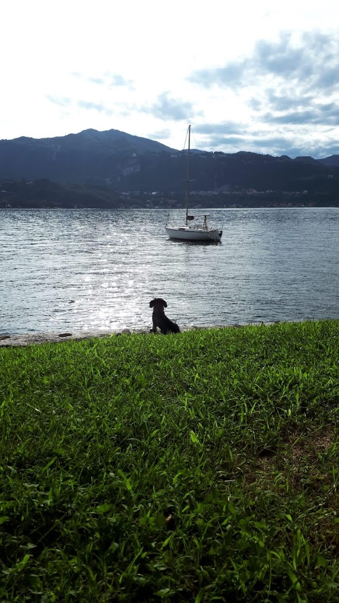
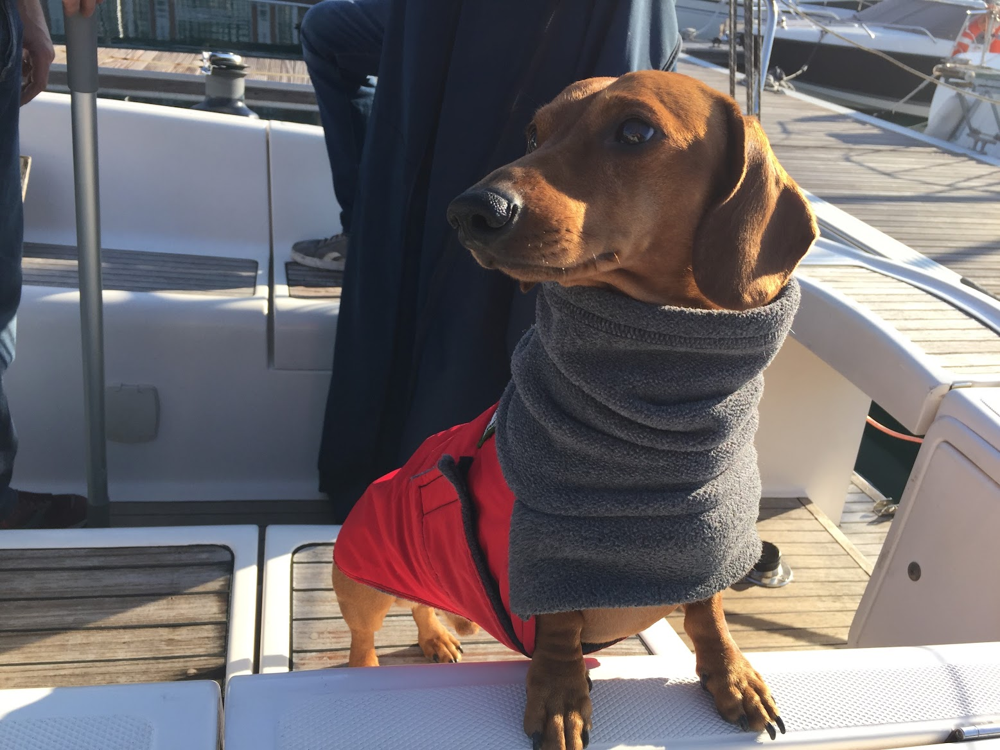

Le lac d'Orta est peut-être le plus dog-friendly des lacs du nord de l'Italie, pour une raison toute simple : il est tranquille. Pas de promenades bondées, pas de routes riveraines saturées, pas de foule stressée — juste des chemins ombragés, de l'eau partout et des villages où le barista garde encore une gamelle près de la porte. Si vous hésitez à emmener votre chien, la réponse est oui. Voici comment bien préparer le voyage.
Pourquoi Orta convient si bien aux chiens
Comparé à ses célèbres voisins, le lac d'Orta est petit — environ 13 km d'un bout à l'autre — et l'essentiel de ses rives est resté vert plutôt que bâti. Résultat : des promenades plus courtes et plus fraîches en été, beaucoup d'ombre, et des coins de baignade qui n'ont jamais des airs de beach club. Si vous avez déjà tenté de promener un chien sur les quais du lac de Garde en août, vous comprendrez immédiatement la différence.
Les plus belles promenades avec votre chien
Les rives et le vieux bourg d'Orta San Giulio. Une balade facile, presque plate, entre ruelles pavées et vues sur le lac. Allez-y tôt le matin, quand le village appartient encore aux habitants, aux chiens et aux hirondelles.
Les bois du Sacro Monte. Au-dessus du village, le Sacro Monte, classé à l'UNESCO, est entouré d'un parc forestier ombragé aux larges allées — l'un des endroits les plus frais (au sens propre) lors des après-midi de grande chaleur. Les chiens tenus en laisse sont les bienvenus sur le site.
Les sentiers du tour du lac. Certains tronçons de l'itinéraire pédestre qui fait le tour du lac — en particulier sur la rive occidentale, plus calme, entre Pella et San Maurizio d'Opaglio — offrent de longues portions sans circulation, avec un accès régulier à l'eau pour un plongeon rafraîchissant.
Vers le Mottarone. Si votre chien a le pied montagnard, les sentiers qui grimpent au Mottarone depuis la rive orientale alternent forêt et prairies, jusqu'à une vue sur sept lacs. Pour des options plus douces, consultez notre guide des activités de plein air autour du lac d'Orta.
Les chiens peuvent-ils se baigner dans le lac ?
À de nombreux endroits, oui — et l'eau du lac d'Orta est réputée pour sa propreté, comme nous l'avons raconté dans l'histoire du redressement du lac. Les règles de baignade pour les chiens varient selon la commune et la saison : les plages centrales sont généralement interdites en plein été, tandis que les rives moins fréquentées et les premières heures de la matinée sont en général tolérées. Notre conseil : allez là où vont les habitants avec leurs chiens, avant 9 heures, et vérifiez les panneaux sur chaque plage. Notre guide des plages du lac d'Orta vous dit à quoi vous attendre rive par rive.

Notes pratiques pour l'Italie
Quelques points à connaître pour les visiteurs venus de l'étranger. Dans les espaces publics, les chiens doivent être tenus en laisse (1,5 m maximum) et vous êtes tenu d'avoir une muselière sur vous, même si votre chien ne la porte jamais. Restaurants et cafés décident au cas par cas, mais en terrasse cela ne pose presque jamais de problème — autour d'Orta, les chiens bien élevés sont les bienvenus à la plupart des tables en extérieur. En été, prévoyez les promenades le matin et le soir : en juillet et en août, les après-midis sur la rive ensoleillée sont vraiment chauds, et les pavés chauffent vite.
Venir en voiture avec son chien
Pour les voyageurs venus de Suisse, d'Allemagne et de France, Orta est l'une des destinations italiennes les plus faciles à rejoindre en voiture — pas d'avion, pas de caisse de transport en soute, juste une route panoramique à travers les Alpes. Depuis le Simplon ou le Gothard, vous êtes au bord du lac deux petites heures après la frontière, et la villa dispose d'un parking privé à une longueur de rampe de la porte.

Une villa pet-friendly les pieds dans l'eau
La Villa Volpe accueille un animal de petite ou moyenne taille par séjour (des frais de ménage de 120 € s'appliquent — voir notre FAQ pour les détails). Pour un chien, honnêtement, cet endroit est un paradis : la maison est entièrement de plain-pied, sans escaliers, le jardin ouvre directement sur notre plage privée et la baignade du matin est à trois mètres de la porte. Nous fournissons les gamelles d'eau et de nourriture ; apportez le panier que votre chien adore, et le lac s'occupe du reste.